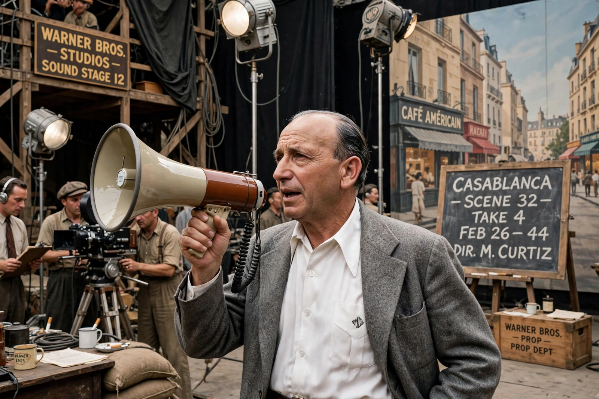

Michael Curtiz
From Wikipedia, the free encyclopedia

Michael Curtiz (born Manó Kaminer, 24 December 1886 – 10 April 1962) was a Hungarian-American film director, among the most prolific and accomplished of Hollywood's studio era. At Warner Bros. he directed The Adventures of Robin Hood (1938), Casablanca (1942, Academy Award for Best Director), Mildred Pierce (1945) and Yankee Doodle Dandy, moving fluently among swashbucklers, gangster films, melodrama and musicals with a signature visual dynamism — expressive lighting, moving camera, scenes charged beyond their scripts.
Career
Curtiz had directed some 60 European films before Jack Warner imported him in 1926; at Warners he shot over 100 more, often several a year, including Errol Flynn's stardom (Captain Blood, Robin Hood, The Sea Hawk) and noir landmarks. Autocratic and English-mangling ('bring on the empty horses!'), he extracted performances actors resented and audiences treasured.
Casablanca and legacy
Casablanca — a rushed wartime production nobody expected to endure — won the Best Picture Oscar and became cinema's beloved common property, its dialogue a world language. Curtiz worked into the 1960s (Elvis's King Creole, 1958, among his late successes). Long underrated as a mere studio craftsman, he is now widely ranked among the classical masters, his style — protean, energetic, invisible until it isn't — the strongest argument for the auteurism of professionals.